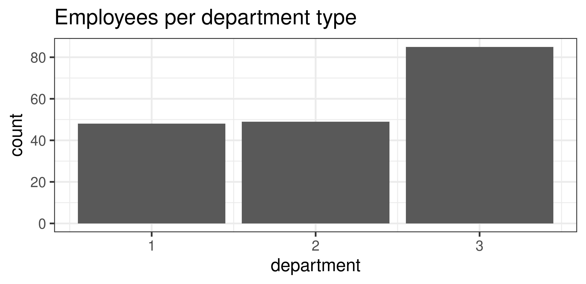

Chapter 8 Cleaning Data
The data that we used in the first case study was perfect in many ways. There were no superfluous columns or missing observations, and everything was perfectly labelled, ready to be analysed. Data in the real world is, however, not always this clean. This chapter introduces some techniques to clean data with R and the Tidyverse to create reproducible code.
The learning objectives for this session are: * Select and rename columns in a data frame. * Join data frames. * Use piped code for greater efficiency.
The data and code for this session are available in the chapter_08.R file in the casestudy2 folder of your RStudio project.
8.1 Case Study 2
The case study for the next four chapters uses data obtained from a sample of customers in three Gormsey towns. The Gormsey water utility decided that it would be good to know how the people of Gormsey feel about their water services. A random sample of consumers in three towns completed a series of questions.
The customer experience manager has two questions: 1. How much do people care about the service that Gormsey water utility provides? 2. How satisfied are the people of Gormsey are with their service provider?
The survey that includes a series of questions from a sample of customers in three towns. The results of the survey are stored in a CSV file. Your task over the next four sessions is to analyse the results of this survey and produce a written report.
The data used in this case study is taken from a PhD research project about customer-centricity for water utilities. If you are interested reading more about a scientific view of customer experience in water utilities, then you can read Customer Experience Management for Water Utilities by Peter Prevos, available from IWA Publishing.
8.2 Cleaning data
Many data science practitioners know that cleaning data can consume 80% of the available time. Cleaning data is fundamental because even the most advanced algorithm cannot create value from dirty data. As the old adagio goes: “rubbish-in is rubbish-out”. The following code snippets show how to clean this survey data using reproducible code.
Using code to clean data is better than to manually manipulate data in Excel because with code, the process of changing the data is transparent, and the original raw data still exists. The process can always be rolled back. Using code to clean data is also reproducible because it can be repeated with other raw data sets that have the same structure.
8.2.1 Load and explore the data
The results of the survey are stored in the casestudy2 folder in the customer_survey.csv file. This data is the raw data as collected from the online survey system.
Open a new R script and load the data. Explore the content with some of the techniques you have learned so far.
library(tidyverse)
rawdata <- read_csv("casestudy2/customer_survey.csv")
glimpse(rawdata)We use rawdata as the variable name because we want to keep this data intact as we process it, in case we need to use it again.
The output of the glimpse() function shows that this data contains over fifty variables. You will note that the class of all variables in the raw data is a character.
How many rows and columns of data does this data have? Which fields are useful?
The output of the glimpse() function shows that the first 19 columns contain metadata, such as a unique response ID, internet addresses, start and end times, and so on. The next 35 columns contain the actual data.
Looking at the data with the View() function, we see that the first two rows contain header information. Many data files contain more than one header row, or they contain meta information at the bottom, such as totals or other calculations. A clean data set should have only one header row and not contain any data summaries. Because of the double headers, R thinks that all columns are text. The code below shows the content of the first two rows as a data frame.
questions <- read_csv("casestudy2/customer_survey.csv", n_max = 2, col_names = FALSE)
questions <- data.frame(t(questions), row.names = NULL)The readr package assumes that the first for contains the variable names by default. This code reads the first two rows n_max = 2 and ignores the column names. R will assign neutral column names. Thet() function transposes (rotates) the data so that the rows become columns. By setting the row names at NULL, the generated names are ignored. The columns in this data frame are the first two rows in the raw data. This method makes it easy to review the two names for each column.
From the result of this code, you can clearly see that the first row in the raw data contains the questions as they appeared on the survey, while the second row contains abbreviated variable names. We thus need to remove the first row and re-assess the data types to create a clean table.
The first line of code creates the new customers data frame by removing the first line of the raw data, which includes the questions. Using negative numbers in data frame indices removes them from the output.
The type_convert() function re-assesses the variables to guess the correct data types. Using the glimpse() function again, we can see that most columns are now numerical values, which is what we want them to be.
8.2.2 Remove unwanted responses
The next step is to remove any respondents that either:
- Did not consent to their data being used.
- Do not have tap water.
- Do not live in one of the three nominated towns.
- Did not pay attention when completing the survey.
The first question on the survey ask for consent to use the responses. Informed consent is the first principle of ethical data science. The survey also asks whether the respondent has tap water and which city they live in. One of the problems with using paid survey subjects is that they are motivated to complete many surveys, without having much regard for their answers. Respondents were therefore also subjected to an attention filter: “If you live in Gormsey then select Strongly Agree”. The survey was only sent to people within Gormsey. Respondents who did not answer “Strongly Agree” should thus be excluded from the data.
The term field reports why a respondent terminated the survey and whether they paid attention. To summarise the content of this field, we can use the table() function. This function creates, as expected, a table with a count of the unique elements in a vector.
The output of this function shows that 79 people did not pass through the attention filter, 8 did not consent, 15 did not have tap water, and 97 lived outside Gormsey.
You might notice that the total number of items in the table does not match the number of rows (observations) in the data frame. When you view the content of the customers$term field, you see many entries with NA in them. These are empty values (Not Available). R uses this method to manage missing values. The table function can include NA values with the useNA = "ifany" option:
table(customers$term, useNA = "ifany")##
## attention consent noTapWater otherCity <NA>
## 79 8 15 97 491The table() function forms part of the core R functionality. In the previous case study, we already saw the count() function of the Tidyverse. This function includes NA values. Another advantage of this function is that the output is a data frame, which we can use for further calculations or visualise with ggplot.
term <- count(customers, term)
ggplot(term, aes(term, n)) +
geom_col() +
labs(title = "Responses to termination field") +
theme_minimal(base_size = 12)Figure 8.1: Responses to termination field.
We only want those rows of data that have an NA value in the term field, as these are the surveys that were not terminated. To find these observations, we need to use a special function. The is.na() function results in a logical variable (TRUE or FALSE) that shows whether a field is not available. Try is.na(customers$term) to see the result. The next line of code filters the customer data by only those that have NA in the term field. You cannot use term == NA because this is a special condition. More about NA values in the next session.
customers <- filter(customers, is.na(term))To see all respondents that did not complete the survey, you can negate the is.na(term) statement with an exclamation mark (the NOT function): filter(customers, !is.na(term)). We are thus asking R to filter the customer data frame for all entries where term is not (!) not available (NA).
8.2.3 Remove unwanted variables
The survey data contains metadata that we do not need for further analysis. The first 19 columns contain information about when the survey was taken and so on. The next step is to remove the metadata and the trap question, which was used as the attention filter.
In the dplyr package, the select() function works just like the filter function, but for columns. You can use numbers or names to indicate the required columns (negative numbers remove a column). In this case, we like to keep the first column, which is the unique id for each respondent, and the columns with the city id and survey responses, excluding the attention question.
customers <- select(customers, c(1, 19, 21:51, -33))The penultimate step is to improve the name of the first variable V1. We like to rename this to survey_id because that is a bit more descriptive. The names of the other variables (p01 etc.) seem cryptic, but they will be explained in the next chapter. The questions variable contains the questions that resulted in the answers for each variable.
The rename() function from the dplyr package changes, as the name suggests, the name of variables in a data frame.
customers <- rename(customers, survey_id = V1)8.3 Joining data frames
The last step is to replace the number for the towns in the city variable, which is either 1, 2 or 3 and not very descriptive. We do this by merging the data with a dimension table. This table contains the relationship between the numbers and the names of the towns. In this case study, the three surveyed villages are:
- Merton
- Snake’s Canyon
- Wakefield
Databases have two types of tables. Fact tables contain the actual data and dimension table provide context for this data. Dimension tables are often needed in surveys that have drop-down boxes to provide answers as the data is usually stored as numbers.
First, we create the control table to link the numbers with towns, which is then joined to the primary data. Note how the first function call is split over several lines to enhance its readability.
cities <- tibble(city = 1:3,
city_name = c("Merton", "Snake's Canyon", "Wakefield"))
customers <- left_join(customers, cities)The left_join() function finds the matching fields in the two sets and then merges the sets. You can specify the specific column names with the by = "city" option. Since both data frames have a variable named city, the function automatically matches these fields. This function keeps all the values in the left data set (the survey results) while linking it with the data in the second data frame (the cities).
This function returns all rows from the first tibble (customers), and all columns from both tibbles (customers and cities). Rows in customers with no match in cities will have NA values in the city_name column. If there are multiple matches, all combinations of the matches are returned.
If one of the city variables in the customer data contains a number that is not in the dimension table, the city_name variable becomes NA. If the dimension table has missing matching references, the result is also NA.
The left_join() function is the most common way to join two data sets. The Tidyverse has several other join functions that match values in different ways (Figure 8.2).
Figure 8.2: Schematic view of the dplyr join functions
8.3.1 Write data to disk
We now have a clean data frame that we can use in further analysis. The last step saves this data to disc so that we can reuse it in the following sessions.
The write_csv() function takes a data frame and saves it s a CSV file to the specified filename. Best practice is to not change the raw data and use a different name. Keeping the raw data intact means that your code is reproducible and you can always go back to the original state.
write_csv(customers, "casestudy2/customer_survey_clean.csv")8.4 Simplifying Code with Data Pipes
The sequence of functions explained above cleans the data for further analysis from the raw data to the finished product. The benefit of this approach is that the raw data remains unchanged so that we can use this code also on other survey results with the same data structure.
However, the code is repetitive because we change the customers variable several times in a sequence. In summary, we have taken the following steps to clean the data:
customers <- rawdata[-1, ] # Remove first row
customers <- type_convert(customers) # Convert variable types
customers <- filter(customers, is.na(term)) # Remove terminated respondents
customers <- select(customers, c(1, 19, 21:51, -33)) # Select relevant variables
customers <- rename(customers, id = V1) # Rename first column
customers <- left_join(customers, cities) # Joing city namesA rule-of-thumb in coding is that if you repeat the same thing more than twice, there will be a more efficient way of achieving the same result. In this example, we used “customer <-” six times. There are two ways of combining these lines of code.
A typical way to code in a spreadsheet is to join the steps in a nested formula. While the nested approach uses less space, it is not as easy to understand because you have to read from the inside out.
customers <- rename(select(left_join(filter(type_convert(rawdata[-1, ]), is.na(term)), cities), c(1, 19, 21:51, -33)), survey_id = V1)The Magrittr package within the Tidyverse uses the pipe operator to streamline this process. A pipe transports the output of one function to the input of the next one. A pipe replaces f(x) with x %>% f(), where %>% is the pipe-operator. This code means that R pipes the value of x to the function f(). This step can be repeated in a long sequence. The code used to clean the customer data is now written like this:
customers <- rawdata[-1, ] %>%
type_convert() %>%
filter(is.na(term)) %>%
select(c(1, 19, 21:51, -33)) %>%
rename(survey_id = V1) %>%
left_join(cities)The raw data without the first row is piped to the type converter. The output from this step goes to the filter, onward to the select function, and so on. The name of the customers variable only appears once because it is transported through the pipe. The pipe operator always moves the output of the previous step to the first parameters in the next function.
The best way to understand this piped code is to evaluate it step by step and review the output. You can select bits of the code and run them separately.
Review the code below from chapter 5 and rewrite it as a pipe.
gormsey <- read_csv("casestudy1/gormsey.csv")
gormsey_grouped <- group_by(gormsey, Town, Measure)
summarise(gormsey_grouped, mean = mean(Result))You need to add a pipe symbol to the end of the first line and remove the repeated call of the gormsey_grouped variable:
read_csv("casestudy1/gormsey.csv") %>%
group_by(Town, Measure) %>%
summarise(mean = mean(Result))## # A tibble: 33 × 3
## # Groups: Town [11]
## Town Measure mean
## <chr> <chr> <dbl>
## 1 Bellmoral E. coli 0
## 2 Bellmoral THM 0.0177
## 3 Bellmoral Turbidity 0.148
## 4 Blancathey E. coli 0.00429
## 5 Blancathey THM 0.0166
## 6 Blancathey Turbidity 0.153
## 7 Merton E. coli 0
## 8 Merton THM 0.0425
## 9 Merton Turbidity 0.147
## 10 Paethsmouth E. coli 0
## # … with 23 more rowsWe now have a reproducible script that can be reused every time we run this same survey. This approach promotes the reproducibility of the analysis and allows for peer review of the investigation to assure its soundness.
Now that we have a clean set of data and some new knowledge, it is time for another quiz.
8.5 Quiz 4: Cleaning Data
The fourth quiz has five questions to practice the content of this chapter.
The following five questions test your comprehension of some of the functionality explained in this chapter. Test your answer by executing the code in the console. Any files, including the solutions, are available in the casestudy2 folder.
You receive a CSV file from a colleague. The first five rows of this data look like the table below. How do you read this CSV file into memory?
This file contains lots of data.
id Date Measurement Type
a1 2020-12-02 12.3 A
a2 2020-12-03 7.6 A
a3 2020-12-04 2.3 Bread_csv("casestudy2/quiz_04.csv")read_csv("casestudy2/quiz_04.csv", skip = 1)read_csv("casestudy2/quiz_04.csv", n_max = 1)read_csv("casestudy2/quiz_04.csv", skip = 1, n_max = 2)
You want to write a single piece of code that reads the CSV file from the previous question and removes the second column. What is the most efficient method to achieve this?
read_csv("casestudy2/quiz4.csv", skip = 1) %>% select(-2)select(read_csv("casestudy2/quiz4.csv", skip = 1), -2)read_csv("casestudy2/quiz4.csv"); df <- select(df, -2)read_csv("casestudy2/quiz4.csv"), select(-2)
The casestudy2 folder also contains the results of an employee survey. This survey asks some questions about their attitudes towards marketing. You need to write some code to clean this data so that you can answer the following questions:
How many employees did not consent to the survey (analyse the
consentvariable)?
- 184
- 1
- 0
- 185
The
engineervariable in the employee data indicates whether a respondent has engineering qualifications. Themarketingvariable indicates that a respondent has marketing or customer service qualifications.
How many respondents have both engineering and marketing qualifications?
- 9
- 0
- 3
- 184
You want to visualise the number of employees per department. Complete the following
ggplot()function that produces this result:
{width: 60%, align: “center”} 
ggplot(employees, aes(department)) + `
geom_...()boxplothistogramcolumn
bar
That is it for the fourth quiz. If you get stuck, you can find the answers in the quiz_04.R file in the casestudy2 folder. You can also watch the video to see the solutions.
8.6 Further Study
In the next chapter, we further analyse the personal involvement data with some advanced techniques.